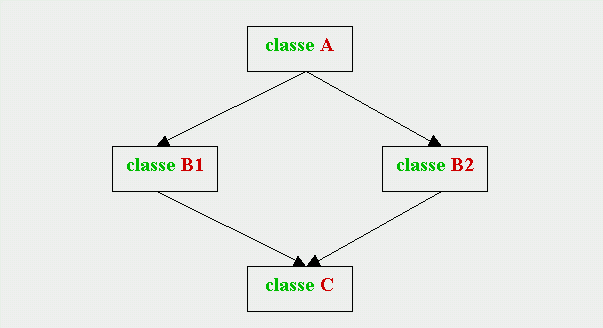

Eredita'
L'eredità in C++
L'eredità domina e governa tutti gli aspetti della vita. Non solo nel campo della genetica, ma anche nello stesso pensiero umano, i concetti si aggregano e si trasmettono secondo relazioni di tipo "genitore-figlio": ogni concetto complesso non si crea ex-novo, ma deriva da concetti più semplici, che vengono "ereditati" e integrati con ulteriori approfondimenti. Per esempio, alle elementari si impara l'aritmetica usando "mele e arance", alle medie si applicano le nozioni dell'aritmetica per studiare l'algebra, al liceo si descrivono le formule chimiche con espressioni algebriche; ma un professore di chimica non penserebbe mai di insegnare la sua materia ripartendo dalle mele e dalle arance!
E quindi è lo stesso processo conoscitivo che si sviluppa e si evolve attraverso l'eredità. Eppure, esisteva, fino a pochi anni fa, un campo in cui questo principio generale non veniva applicato: quello dello sviluppo del software (!), che, pur utilizzando strumenti tecnologici "nuovi" e "avanzati", era in realtà in "ritardo" rispetto a tutti gli altri aspetti della vita: i programmatori continuavano a scrivere programmi da zero, cioè ripartivano proprio, ogni volta, dalle mele e dalle arance!
In realtà le cose non stanno proprio così: anche i linguaggi di programmazione precedenti al C++ (compreso il C) applicano una "specie" di eredità nel momento in cui mettono a disposizione le loro librerie di funzioni: un programmatore può utilizzarle se soddisfano esattamente le esigenze del suo problema specifico; ma, quando ciò non avviene (come spesso capita), non esiste altro modo che ricopiare le funzioni e modificarle per adattarle alle proprie esigenze; questa operazione comporta il rischio di introdurre errori, che a volte sono ancora più difficili da localizzare di quando si riscrive il programma da zero!
Il C++ consente invece di applicare lo stesso concetto di eredità che è nella vita reale: gli oggetti possono assumere, per eredità, le caratteristiche di altri oggetti e aggiungere caratteristiche proprie, esattamente come avviene nell'evoluzione del processo conoscitivo. Ed è questa capacità di uniformarsi alla vita reale che rende il C++ più potente degli altri linguaggi: il C++ vanta caratteristiche peculiari di estendibilità, riusabilità, modularità, e manutenibilità, proprio grazie ai suoi meccanismi di uniformizzazione alla vita reale, quali il data hiding, il polimorfismo, l'overload e, ora, l'eredità.
Classi base e derivata
In C++ con il termine "eredità" si intende quel meccanismo per cui si può creare una nuova classe, detta classe figlia o derivata, trasferendo in essa tutti i membri di una classe esistente, detta classe genitrice o base.
La relazione di eredità si specifica nella definizione della classe derivata (supponendo che la classe base sia già stata definita), inserendo, dopo il nome della classe e prima della parentesi graffa di apertura, il simbolo ":" seguito dal nome della classe base, come nel seguente esempio:
class B : A { ........ } ;
questa scrittura significa che la nuova classe B possiede, oltre ai membri elencati nella propria definizione, anche quelli ereditati dalla classe esistente A.L'eredità procede con struttura gerarchica, o ad albero (come le subdirectories nell'organizzazione dei files) e quindi una stessa classe può essere derivata da una classe base e contemporaneamente genitrice di una o più classi figlie. Quando ogni classe figlia ha una sola genitrice si dice che l'eredità è "singola", come nel seguente grafico:
Se una classe figlia ha più classi genitrici, si dice che l'eredità è "multipla", come nel seguente grafico, dove la classe AB è figlia delle classi A3 e B4, e la classe B23 è figlia delle classi B2 e B3:
Nella definizione di una classe derivata per eredità multipla, le due classi genitrici vanno indicate entrambe, separate da una virgola:
class AB : A3, B4 { ........ } ;
Accesso ai membri della classe base
Introducendo le classi, abbiamo illustrato il significato degli specificatori di accesso private: e public:, e abbiamo soltanto accennato all'esistenza di un terzo specificatore: protected:. Ora, in relazione all'eredità, siamo in grado di descrivere completamente i tre specificatori:
private: (default) indica che tutti i membri seguenti sono privati, e non possono essere ereditati;
public: indica che tutti i membri seguenti sono pubblici, e possono essere ereditati;
protected: indica che tutti i membri seguenti sono protetti, nel senso che sono privati, ma possono essere ereditati;
Quindi, un membro protetto è inaccesibile dall'esterno, come i membri privati, ma può essere ereditato, come i membri pubblici.
In realtà, esiste un'ulteriore restrizione, che ha lo scopo di rendere il data-hiding ancora più profondo: l'accessibilità dei membri ereditati da una classe base dipende anche dallo "specificatore di accesso alla classe base", che deve essere indicato come nel seguente esempio:
class B : spec.di accesso A { ........ } ;
dove spec.di accesso può essere: private (default), protected o public (notare l'assenza dei due punti). Ogni membro ereditato avrà l'accesso più "restrittivo" fra il proprio originario e quello indicato dallo specificatore di accesso alla classe base, come è chiarito dalla seguente tabella:
Specificatori di accesso alla classe base
Accesso dei membri
nella classe baseprivate
protected
public
Accessibilità dei membri ereditati private:
inaccessibili
inaccessibili
inaccessibili
protected:
privati
protetti
protetti
public:
privati
protetti
pubblici
e quindi un membro ereditato è pubblico solo se è public: nella classe base e l'accesso della classe derivata alla classe base è public.
Se una classe derivata è a sua volta genitrice di una nuova classe, in quest'ultima l'accesso ai membri ereditati è governato dalle stesse regole, che vengono però applicate esclusivamente ai membri della classe "intermedia", indipendentemente da come questi erano nella classe base. In altre parole, ogni classe "vede" la sua diretta genitrice, e non si preoccupa degli altri eventuali "ascendenti".
Normalmente l'accesso alla classe base è public. In alcune circostanze, tuttavia, si può volere che i suoi membri pubblici e protetti, ereditati nella classe derivata, siano accessibili unicamente da funzioni membro e friend della classe derivata stessa: in questo caso, occorre che lo specificatore di accesso alla classe base sia private; analogamente, se si vuole che i membri pubblici e protetti di una classe base siano accessibili unicamente da funzioni membro e friend della classe derivata e di altre eventuali classi derivate da questa, occorre che lo specificatore di accesso alla classe base sia protected.
Conversioni fra classi base e derivata
Si dice che l'eredità è una relazione di tipo "is a" (un cane è un mammifero, con caratteristiche in più che lo specializzano). Quindi, se due classi, A e B, sono rispettivamente base e derivata, gli oggetti di B sono (anche) oggetti di A, ma non viceversa.
Ne consegue che le conversioni implicite di tipo da B ad A (cioè da classe derivata a classe base) sono sempre ammesse (con il mantenimento dei soli i membri comuni), e in particolare ogni puntatore (o riferimento) ad A può essere assegnato o inizializzato con l'indirizzo (o il nome) di un oggetto di B. Questo permette, quando si ha a che fare con una gerarchia di classi, di definire all'inizio un puntatore generico alla classe base "capostipite", e di assegnargli in seguito (in base al flusso del programma) l'indirizzo di un oggetto appartenente a una qualunque classe della gerarchia. Ciò è particolarmente efficace quando si utilizzano le "funzioni virtuali", di cui parleremo nel prossimo capitolo.
La conversione opposta, da A a B, non è ammessa (a meno che B non abbia un costruttore con un argomento, di tipo A); fra puntatori (o fra riferimenti) la conversione è ammessa solo se è esplicita, tramite casting. Non è comunque un'operazione che abbia molto senso, tantopiù che possono insorgere errori che sfuggono al controllo del compilatore. Per esempio, supponiamo che mb sia un membro di B (e non di A):
A a; B& b = (B&)a; b è un alias di a, convertito a tipo B& - il compilatore lo accetta b.mb = ....... per il compilatore va bene (mb è membro di B), ma in realtà b è un alias di a e mb non è membro di A - access violation ? Tornando alle conversioni implicite da classe derivata a classe base, c'è da aggiungere che si tratta di conversioni di "grado" molto alto (altrimenti dette "conversioni banali"), cioè accettate da tutti i costrutti (come le conversioni da variabile a costante). Per esempio, il costrutto catch con tipo di argomento X "cattura" le eccezioni di tipo Y (con Y diverso da X), cioè accetta conversioni da Y a X, solo se:
- X è const Y (o viceversa, solo se l'argomento è passato by value)
- Y è una classe derivata da X
mentre, per esempio, non accetta conversioni da int a long (o viceversa).
Costruzione della classe base
Una classe derivata non eredita i costruttori e il distruttore della sua classe base. In altre parole ogni classe deve fornire i propri costruttori e il distruttore (oppure utilizzare quelli di default). Quanto detto vale anche per l'operatore di assegnazione, nel senso che, in sua assenza, la classe derivata usa l'operatore di default anzichè ereditare quello eventualmente presente nella classe base.
Ogni volta che una classe derivata è istanziata, entrano in azione automaticamente i costruttori di tutte le classi gerarchicamente superiori, secondo lo stesso ordine gerarchico (prima la classe base "capostipite", poi tutte le altre, e per ultima la classe che deve creare l'oggetto). Analogamente, quando l'oggetto "muore", entrano in azione automaticamente i distruttori delle stesse classi, ma procedendo in ordine inverso (per primo il distruttore dell'oggetto e per ultimo il distruttore della classe base "capostipite").
Per quello che riguarda i costruttori, il fatto che entrino in azione automaticamente comporta il solito problema (vedere il capitolo sui Costruttori e Distruttori degli oggetti), che insorge ogni volta che un oggetto non è costruito con una chiamata esplicita: se è eseguito il costruttore di default, tutto bene, ma come fare se si vuole (o si deve) eseguire un costruttore con argomenti?
Abbiamo visto che questo problema ha una soluzione diversa per ogni circostanza: in pratica ci deve sempre essere "qualcun altro" che si occupi di chiamare il costruttore e fornigli i valori degli argomenti richiesti. Nel caso delle classi ereditate il "qualcun altro" è rappresentato dai costruttori delle classi derivate, ciascuno dei quali deve provvedere ad attivare il costruttore della propria diretta genitrice (non preoccupandosi invece delle eventuali altre classi gerarchicamente superiori). Come già abbiamo visto nel caso di una classe composta, il cui costruttore deve includere le chiamate dei costruttori dei membri-oggetto nella propria lista di inizializzazione, così vale anche per le classi ereditate: ogni costruttore di una classe derivata deve includere nella lista di inizializzazione la chiamata del costruttore della propria genitrice. Questa operazione si chiama: costruzione della classe base.
Per chiarire quanto detto, consideriamo per esempio una classe A che disponga di un costruttore con due argomenti:
class A { DEFINIZIONE DEL COSTRUTTORE DI A protected: A::A(int p, float q) : m1(q), m2(p) float m1; { .... eventuali altre operazioni del int m2; costruttore di A } public: A(int,float); .... altri membri .... }; Vediamo ora come si deve comportare il costruttore di una classe B, derivata di A:
class B : public A { DEFINIZIONE DEL COSTRUTTORE DI B int n; B::B(int a, int b, float c) : n(b), A(a,c) public: B(int,int,float); { .... eventuali altre operazioni del .... altri membri .... }; costruttore di B } Come si può notare, il costruttore di B deve inserire la chiamata di quello di A nella propria lista di inizializzazione (se non lo fa, e il costruttore di A esiste, cioè non è chiamato di default, il C++ dà errore); ovviamente l'ordine originario degli argomenti del costruttore di A va rigorosamente mantenuto.
Nel caso che B sia a sua volta genitrice di un'altra classe C, il costruttore di C deve includere nella propria lista di inizializzazione il termine: B(a,b,c), cioè la chiamata del costruttore di B, ma non il termine A(a,c), chiamata del costruttore di A.
Il costruttore di una classe derivata non può inizializzare direttamente i membri ereditati dalla classe base: rifacendoci all'esempio, il costruttore di B non può inizializzare i membri m1 e m2 ereditati da A, ma lo può fare solo indirettamente, invocando il costruttore di A.
Notiamo infine che il costruttore di A è dichiarato public: ciò significa che la classe A può essere anche istanziata indipendentemente. Se però fosse dichiarato protected, il costruttore di B lo "vedrebbe" ancora e quindi potrebbe invocarlo ugualmente nella propria lista di inizializzazione, ma gli utenti esterni non potrebbero accedervi. Un modo per occultare una classe base (rendendola disponibile solo per le sue classi derivate) è pertanto quello di dichiarare tutti i suoi costruttori nella sezione protetta.
Regola della dominanza
Finora, negli esempi abbiamo attribuito sempre (e deliberatamente) nomi diversi ai membri delle classi. Ci chiediamo adesso: cosa succede nel caso che esista un membro della classe derivata con lo stesso nome di un membro della sua classe base? Può insorgere un conflitto fra i nomi, oppure (nel caso che il membro sia un metodo) si applicano le regole dell'overload? La risposta ad entrambe le domande è: NO. In realtà si applica una regola diversa, detta regola della "dominanza": viene sempre scelto il membro che appartiene alla stessa classe a cui appartiene l'oggetto.
Per esempio, se due classi, A e B, sono rispettivamente base e derivata e possiedono entrambe un membro di nome mem, l'operazione:
ogg.mem
seleziona il membro mem di A se ogg è istanza di A, oppure il membro mem di B se ogg è istanza di B.Volendo invece selezionare forzatamente uno dei due, bisogna qualificare il nome del membro comune mediante il solito operatore di risoluzione della visibilità. Per esempio:
ogg.A::mem
seleziona sempre il membro mem di A, anche se ogg è istanza di B.La regola della dominanza può essere sfruttata per modificare i membri ereditati (soprattutto per quello che riguarda i metodi): l'unico sistema è quello di ridichiararli con lo stesso nome, garantendosi così che saranno i nuovi membri, e non gli originari, ad essere utilizzati in tutti gli oggetti della classe derivata. Non è comunque possibile diminuire il numero dei membri ereditati: le funzioni "indesiderate" potrebbero essere ridefinite con "corpo nullo", ma non si può fare di più.
Eredità e overload
Se vi sono due metodi con lo stesso nome, uno della classe base e l'altro della classe derivata, abbiamo visto che vale la regola della dominanza e non quella dell'overload. Ciò è vero anche se le due funzioni hanno tipi di argomenti diversi e, in base all'overload, verrebbe selezionata la funzione che appartiene alla classe a cui non appartiene l'oggetto.
Per fare un esempio (riprendendo quello precedente), supponiamo che ogg sia un'istanza della classe derivata B, e che entrambe le classi possiedano un metodo, di nome fun, con un argomento di tipo double nella classe A e di tipo int nella classe B:
A::fun(double) B::fun(int)
in esecuzione, la chiamata: ogg.fun(10.7)
non considera l'overload e seleziona comunque la fun di B con argomento int, operando una conversione implicita da 10.7 a 10Questo comportamento deriva in realtà da una regola più generale: l'overload non si applica mai fra funzioni che appartengono a due diversi ambiti di visibilità, anche se i due ambiti corrispondono a una classe base e alla sua classe derivata e quindi la funzione della classe base è accessibile nella classe derivata per eredità.
La dichiarazione using
Abbiamo già incontrato l'istruzione di "using-declaration", parlando dei namespace, e sappiamo che serve a rendere accessibile un membro di un namespace nello stesso ambito in cui è inserita l'istruzione stessa.
Analogamente, una using-declaration si può inserire nella definizione di una classe derivata per trasferire nel suo ambito un membro della classe base. Riprendendo il solito esempio, supponiamo ora di inserire nella definizione di B l'istruzione:
using A::fun;
(notare che il nome fun appare da solo, senza argomenti e senza parentesi). Adesso sì che entrambe le funzioni sono nello stesso ambito di visibilità e quindi si può applicare l'overload. Pertanto la chiamata:
ogg.fun(10.7)
selezionerà correttamente la funzione con argomento double, cioè la fun di A.Una using-declaration, se non si riferisce a un namespace, può essere inserita esclusivamente nella definizione di una classe derivata e può riferirsi esclusivamente a un membro della classe base. Non sono ammessi altri usi. Una using-directive può essere usata solo con i namespace.
Una using-declaration, inserita nella definizione di una classe derivata, può avere un altro effetto, oltre a quello di rendere possibile l'overload: permette di modificare l'accesso ai membri della classe base. Infatti, se un membro della classe base è protetto (non se è privato), oppure se lo specificatore di accesso alla classe base è protected o private, e la using-declaration è inserita nella sezione pubblica della classe derivata, quel membro diventa pubblico. Questo fatto può essere utilizzato per specificare interfacce che mettono a disposizione degli utenti parti selezionate di una classe.
Eredità multipla e classi basi virtuali
Supponiamo che una certa classe C derivi, per eredità multipla, da due classi genitrici B1 e B2. Nella definizione di C, il nome di ognuna delle due classi base deve essere preceduto dal rispettivo specificatore di accesso (se non è private, che, ricordiamo, è lo specificatore di default). Per esempio:
class C : protected B1, public B2 { ........ } ;
in questo caso, nella classe C, i membri ereditati da B1 sono tutti protetti, mentre quelli ereditati da B2 rimangono come erano nella classe base (protetti o pubblici).Il costruttore di C deve costruire entrambe le classi genitrici, cioè deve includere, nella propria lista di inizializzazione, entrambe le chiamate dei costruttori di B1 e di B2, o meglio, deve includere quei costruttori di B1 o di B2 che non sono di default, considerati indipendentemente (e quindi, a secondo delle circostanze, deve includerli entrambi, o uno solo, o nessuno). Anche nel caso che la classe C non abbia costruttori, è obbligatorio definire esplicitamente il costruttore di default di C (anche con "corpo nullo"), con il solo compito di costruire le classi genitrici (questa operazione non è richiesta solo se anche le classi genitrici sono entrambe istanziate mediante i loro rispettivi costruttori di default).
Supponiamo ora che le classi B1 e B2 derivino a loro volta da un'unica classe base A. Siccome ogni classe derivata si deve occupare solo della sua diretta genitrice, il compito di costruire la classe A è delegato sia a B1 che a B2, ma non a C. Per cui, quando viene istanziata C, sono costruite direttamente soltanto le sue dirette genitrici B1 e B2, ma ciascuna di queste costruisce a sua volta (e separatamente) A; in altre parole, ogni volta che è istanziata C, la sua classe "nonna" A viene costruita due volte (classi base "replicate"), come è illustrato dalla seguente figura:
La replicazione di una classe base può causare due generi di problemi:
occupazione doppia di memoria, che può essere poco "piacevole", soprattutto se gli oggetti di C sono molti e il sizeof(A) è grande;
errore di ambiguità: se gli oggetti di C non accedono mai direttamente ai membri ereditati da A, tutto bene; ma, se dovesse capitare il contrario, il compilatore darebbe errore, non sapendo se accedere ai membri ereditati tramite B1 o tramite B2.
Il secondo problema può essere risolto (in un modo però poco "brillante") qualificando ogni volta i membri ereditati da A. Per esempio, se ogg è un'istanza di C e ma è un membro ereditato da A:
ogg.B1::ma indica che ma è ereditato tramite B1 ogg.B2::ma indica che ma è ereditato tramite B2 Entrambi i problemi, invece, si possono risolvere definendo A come classe base "virtuale": questo si ottiene inserendo, nelle definizioni di tutte le classi derivate, la parola-chiave virtual accanto allo specificatore di accesso alla classe base. Esempio:
class B1 : virtual protected A { ........ } ;
class B2 : virtual public A { ........ } ;La parola-chiave virtual non ha alcun effetto sulle istanze dirette di B1 e di B2: ciascuna di esse costruisce la propria classe base normalmente, come se virtual non fosse specificata. Ma, se viene istanziata la classe C, derivata da B1 e da B2 per eredità multipla, viene creata una sola copia dei membri ereditati da A, della cui inizializzazione deve essere lo stesso costruttore di C ad occuparsene (contravvenendo alla regola generale che vuole che ogni figlia si occupi solo delle sue immediate genitrici); in altre parole, nella lista di inizializzazione del costruttore di C devono essere incluse le chiamate, non solo dei costruttori di B1 e di B2, ma anche del costruttore di A. In sostanza la parola-chiave virtual dice a B1 e B2 di non prendersi cura di A quando viene creato un oggetto di C, perchè sarà la stessa classe "nipote" C ad occuparsi della sua "nonna".
Pertanto, se una classe base è definita virtuale da tutte le sue classi derivate, viene evitata la replicazione e si realizza la cosidetta eredità a diamante, rappresentata dal seguente grafico:
 Sulla reale efficacia dell'eredità multipla esistono a tutt'oggi pareri discordanti: qualcuno sostiene che bisognerebbe usarla il meno possibile, perchè raramente può essere utile ed è meno sicura e più restrittiva dell'eredità singola (per esempio non si può convertire un puntatore da classe base virtuale a classe derivata); altri ritengono al contrario che l'eredità multipla possa essere necessaria per la risoluzione di molti problemi progettuali, fornendo la possibilità di associare due classi altrimenti non correlate come parti dell'implementazione di una terza classe. Questo fatto è evidente in modo particolare quando le due classi giocano ruoli logicamente distinti, come vedremo in un esempio riportato nel prossimo capitolo, a proposito delle classi base astratte.